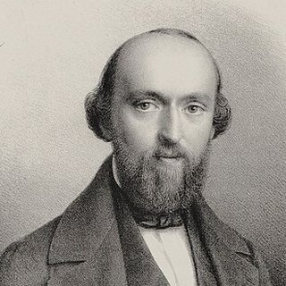

Compositeurs › Johann Friedrich Burgmüller

Johann Friedrich Burgmüller
Le compositeur des études « faciles et progressives » : ses courtes pièces sont parmi les premiers vrais morceaux qu'on apprend au piano.
Sa vie
Il naît à Ratisbonne (Regensburg), en Allemagne, fils d'un directeur musical. Il étudie le piano et la composition et s'installe en 1832 à Paris, où il reste toute sa vie.
À Paris, il travaille comme professeur de piano et écrit de la musique de salon, très appréciée du public de l'époque.
Sa célébrité vient surtout des 25 Études faciles et progressives op. 100 (publiées vers 1851) : de courtes pièces avec un titre et un caractère, pensées pour les jeunes élèves.
Portrait : Fr. Meyer (c. 1840), domaine public, sur Wikimedia Commons.

Anecdotes
- L'Arabesque est le n° 2 de l'op. 100, après « La candeur ».
- Les études op. 100 sont très populaires dans les écoles de musique du monde entier, en particulier au Japon.
- Chaque étude travaille une difficulté précise mais sonne comme un vrai morceau, pas comme un exercice.
Au piano
- Dans l'Arabesque, la main droite court en groupes rapides : travaille-les lentement, puis par groupes, en t'arrêtant sur la première note.
- Les accords staccato de la main gauche doivent être courts et légers.
- Lis bien le titre et le caractère : ces pièces racontent une petite scène.
Ses morceaux à apprendre 1 morceau

Apprends-le note par note avec Piano Learning
Avec « Attends la note », le morceau s'arrête jusqu'à ce que tu joues la bonne touche, sur ton téléphone ou sur ton propre piano (l'appli t'écoute). Mains séparées, vitesse dès 10 %, partition toujours sous les yeux.
Télécharge-la gratuitement sur Google Play Gratuit comme La Campanella, la Marche turque, Jingle Bells et Frère Jacques. Des centaines d'autres morceaux avec un seul achat, sans abonnement.